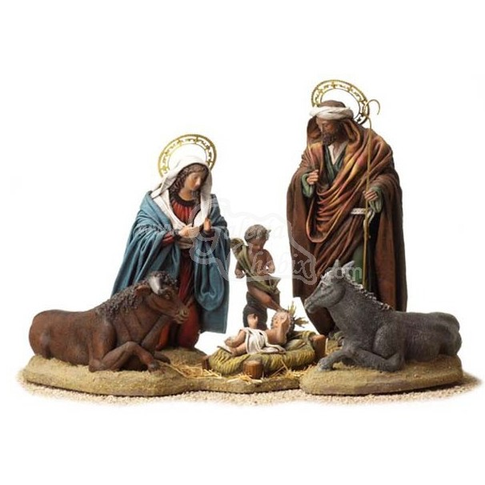

Artículo: Nacimiento
Referencia: FEX-856
Precio: 551 €
Descripción:
Elaborado artesanalmente por el prestigioso artista Jesús Griñán.
Figuras fabricadas en barro lienzado y pintadas a mano.
Conjunto compuesto por 6 piezas.
Tamaño: 32 cm.
Tiempo de entrega estimado: 30 días.